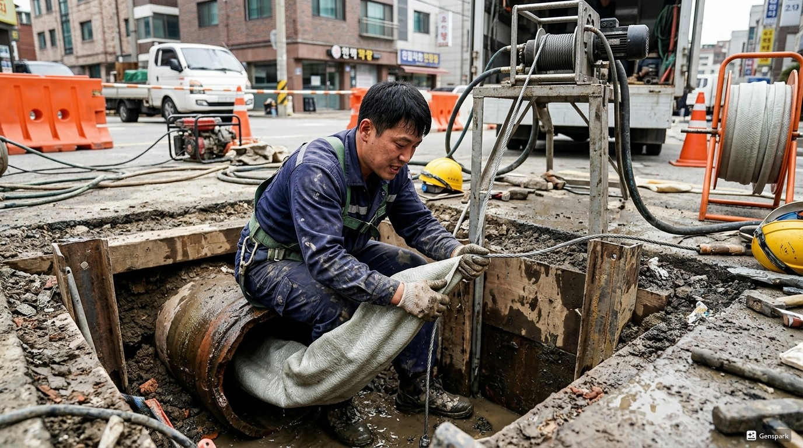
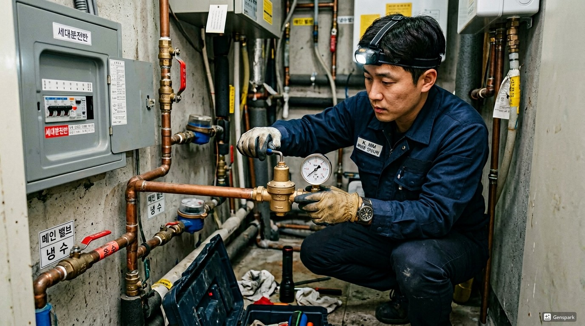
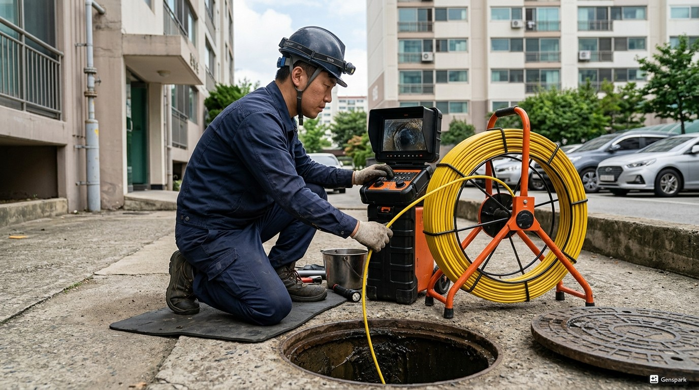

동작구의 정화조청소는 환경 기준 강화와 함께 중요성이 증대되고 있습니다. 한강 인근 주택가. 노량진 수산시장 인근 오래된 음식 관련 건물 많음 정기적인 청소로 환경 오염을 방지하고 시설 수명을 연장할 수 있습니다.

▲ 동작구 현장에서 전문 장비로 정화조청소 해결 작업 중
제우스시설관리는 정화조청소 문제를 해결하기 위해 최첨단 전문 장비를 갖추고 있습니다. 드레인 기계로 막힘을 물리적으로 제거하고, 관로 내시경 카메라로 정확한 원인을 파악하며, 고압세척기로 배관 내부를 완벽하게 청소합니다. 동작구 전역에 서비스 인력을 배치하여 28분 내 출동 가능합니다.

▲ 전문 장비를 이용한 정화조청소 해결 작업
동작구에서 정화조청소가 발생하는 주요 원인 중 하나는 '정화조 시스템의 자연적 기능 저하'입니다. 이는 동작구의 지리적 특성과 도시 구조로 인한 자연스러운 결과입니다. 문제를 방치하면 더 큰 배관 손상으로 이어질 수 있으므로, 초기 증상이 보일 때 즉시 전문가 상담을 받는 것이 중요합니다.
✅ 드레인 기계 - 스프링 와이어로 배관 내 이물질을 물리적으로 파쇄·제거
✅ 관로 내시경 카메라 - 배관 내부를 실시간 영상으로 확인하여 정확한 진단
✅ 고압세척기 - 최대 200bar 고압수로 배관 내벽 오염물 완벽 세척
✅ 관로탐지기 - 매설 배관의 위치와 깊이를 정확히 탐지

▲ 제우스시설관리의 최첨단 장비로 신속하고 정확하게 처리
동작구 전 지역에 28분 내 출동합니다. 야간·주말·공휴일 추가 요금 없이 동일한 서비스를 제공합니다.
제우스시설관리는 서울·경기·인천 전 지역에서 24시간 긴급 출동 서비스를 제공합니다. 출장비 무료, 미해결 시 비용 0원이라는 파격적인 정책으로 고객 부담을 최소화합니다.
숙련된 전문 기술자가 최첨단 장비(드레인 기계, 관로 내시경 카메라, 고압세척기, 관로탐지기)를 직접 가지고 출동하여 현장에서 즉시 문제를 해결합니다.
Step 1. 전화 접수 및 상담
증상 파악 후 필요 장비를 미리 준비합니다.
Step 2. 28분 내 현장 출동
가장 가까운 전문 기술자가 즉시 출동합니다.
Step 3. 전문 장비로 진단
내시경 카메라, 관로탐지기 등으로 정확한 원인을 파악합니다.
Step 4. 문제 해결
드레인 기계, 고압세척기 등 전문 장비로 문제를 해결합니다.
Step 5. 결과 확인
작업 결과를 고객에게 확인시켜 드리고, 재발 방지 가이드를 안내합니다.
건물 유형: 20년 이상 된 건물 | 지역: 동작구
오래된 배관의 내부 스케일 축적으로 인한 문제. 내시경 진단 후 고압세척으로 배관 내부 청소. 고객에게 정기 점검 주기를 안내하고, 필요 시 부분 배관 교체를 권고. 작업 시간 1시간.
건물 유형: 신축 상가 | 지역: 동작구
밤 11시 긴급 연락. 28분 내 현장 도착하여 즉시 문제 해결. 야간임에도 추가 비용 없이 동일 요금 적용. 고객 만족도 최상. 작업 시간 45분.
예상 비용: 20만원~50만원 (부가세 별도)
비용 결정 요소: 정화조 용량, 슬러지 양
💡 제우스시설관리 특별 정책
✅ 출장비 무료 - 현장 방문 후 견적만 받고 취소해도 비용 없음
✅ 미해결시 비용 0원 - 문제가 해결되지 않으면 한 푼도 받지 않음
✅ 사전 견적 안내 - 작업 시작 전 정확한 비용을 먼저 안내
✅ 추가 비용 없음 - 야간/주말/공휴일 동일 요금
정화조청소 문제 발생 시 무리하게 직접 해결하려 하지 마시고, 전문 장비를 갖춘 업체에 의뢰하시는 것이 안전합니다. 잘못된 시도는 배관 손상으로 더 큰 비용이 발생할 수 있습니다.
A. 네, 하수도법에 따라 정화조는 연 1회 이상 청소가 의무입니다. 미이행 시 과태료가 부과되며, 방류수 수질 기준 초과 시 추가 제재를 받을 수 있습니다.
A. 정상 작동하는 정화조에서도 약간의 냄새가 날 수 있지만, 심한 악취는 청소 시기 경과, 미생물 사멸, 통기관 막힘 등의 문제를 의미합니다. 점검이 필요합니다.
A. 청소는 정화조 내부의 슬러지(침전물)를 수거하는 정기 관리이고, 준설은 오랜 기간 방치되어 고형화된 슬러지를 제거하는 집중 작업입니다. 정기 청소를 하면 준설이 불필요합니다.